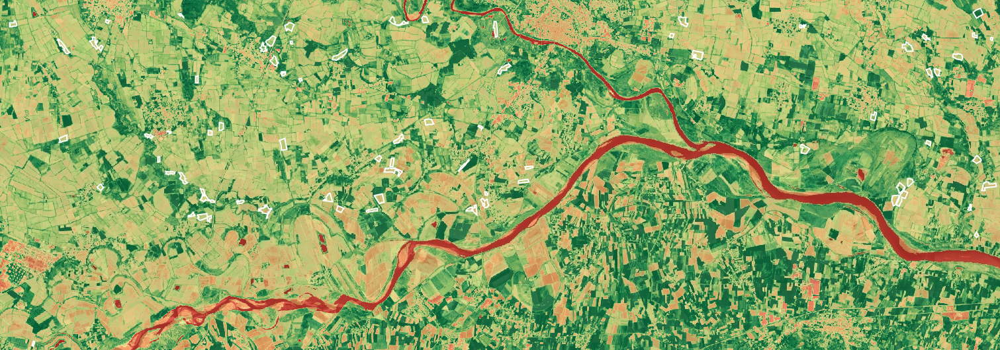
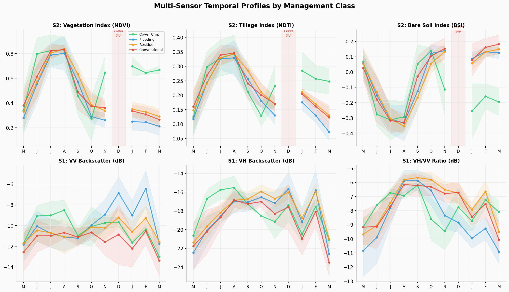
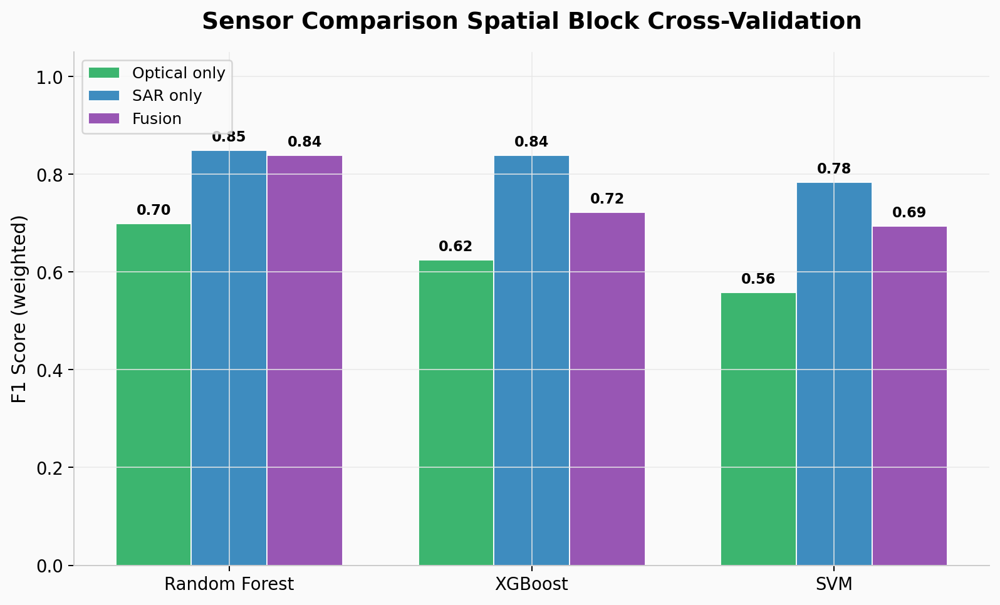
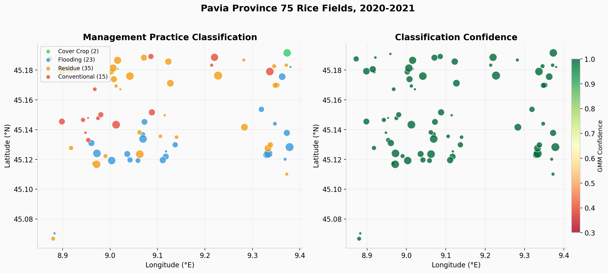
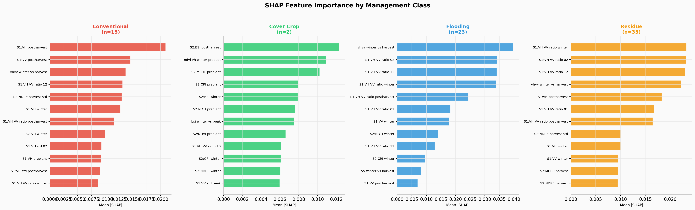
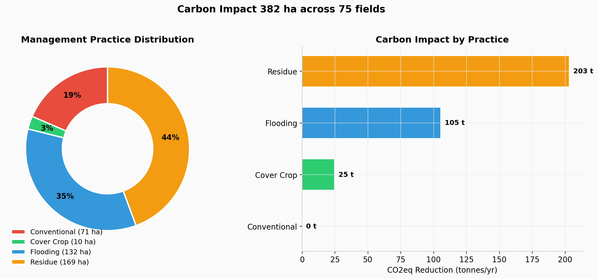

This project investigates whether satellite remote sensing can distinguish conservation agriculture practices, cover cropping, residue retention, and winter flooding, from conventional tillage in rice paddies, using only freely available Sentinel-1 (SAR) and Sentinel-2 (optical) imagery.
The study covers 75 rice fields (382 ha) in Pavia Province, Lombardy, Italy, over one agricultural season from May 2020 to March 2021. No ground-truth labels were available; pseudo-labels were derived through unsupervised clustering and physical signature interpretation. This is a proof-of-concept, not an operational system.
Fields were selected through a multi-step filtering pipeline: DUSAF 2021 rice polygons filtered to 0.5–11 ha, cross-validated with SIARL 2020 records, stratified by area quartiles, and spatially spread on a 500 m grid to ensure geographic diversity, yielding 75 fields.
Sentinel-2 Surface Reflectance (10–20 m, ~5-day revisit) provided NDVI, NDTI, BSI, and NDRE indices. Sentinel-1 GRD (C-band, 10 m, 12-day revisit) provided VV and VH backscatter. December 2020 had zero usable Sentinel-2 images due to persistent Po Valley fog, SAR provided continuous coverage through this critical winter window.
Multi-temporal signatures across the five analysis windows reveal distinct physical behaviors for each management class. Cover crops show strong NDVI recovery in winter, flooded fields exhibit characteristic low backscatter, and residue retention is marked by elevated NDTI and VH/VV ratios.

The SAR-only Random Forest achieved a weighted F1 of 0.85, substantially outperforming the optical-only model (F1 = 0.70). Fusion of both sensor types did not improve over SAR alone. This result reflects SAR's ability to penetrate cloud cover and capture structural surface properties critical for distinguishing post-harvest management.

The spatial distribution of predicted management classes across the 75 study fields. Class assignments were derived from the best-performing SAR-only Random Forest model.

| Management Class | Fields | Area (ha) | Key Signature |
|---|---|---|---|
| Residue Retention | 35 | 169 | High NDTI, elevated VH/VV ratio |
| Winter Flooding | 23 | 132 | Low VH backscatter, specular reflection |
| Conventional Tillage | 15 | 71 | Bare soil BSI signal, no winter recovery |
| Cover Crop | 2 | 10 | Strong winter NDVI recovery |
SHAP analysis confirms that the model relies on physically meaningful features. The VH/VV polarization ratio is the top predictor overall, while different management classes are detected through different physical mechanisms, flooding through low backscatter, residue through surface roughness, and cover crops through vegetation indices.

Using IPCC Tier 1 literature values (not field measurements), conservation practices across the 382 ha study area would correspond to the following estimated impacts. These are indicative estimates based on published emission factors, not site-specific measurements.

| Limitation | Impact | Next Step |
|---|---|---|
| Pseudo-labels from clustering | Circular validation risk, model may learn cluster artifacts | Collect field-verified ground truth for independent validation |
| Small sample (75 fields) | Limited generalizability, especially for cover crop (n=2) | Expand to additional provinces and seasons |
| Single season (2020–21) | Temporal signatures may vary across years | Multi-year analysis to assess robustness |
| Literature-based carbon factors | Not site-specific, inherently uncertain | Partner with agronomists for in-situ measurements |
| No independent test set | Performance may be overestimated | Reserve held-out fields or use external validation data |